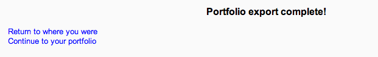

Google Drive can serve both as a repository from which users can “pull” files they need for their course and also a Portfolio into which they can “push” files they want to keep. Both options need to be enabled by the administrator before they are available for teachers and students.
Note: In order to use either the Google Drive or Picasa portfolios (also the Google Drive or Picasa repositories) an administrator must register their Moodle site with Google, as described in Google OAuth 2.0 setup, and obtain a client ID and secret. The client ID and secret can then be used to configure all Google Drive and Picasa plugins.
- Log in as an administrator and go to Administration > Site administration > Plugins > Portfolios > Manage Portfolios
- Activate the Google Drive portfolio by selecting ‘Enable and visible’ in the dropdown menu.
- Configure the Google Drive portfolio by entering the client ID and secret.
- Save changes.
- You can export items such as assignments, chat and forum posts to enabled portfolios. Here is an example with a forum post:
- At the bottom of your completed forum post are the words “export to portfolio”.

- Click the words “export to portfolio” and then select from the dropdown Google Drive. (If it is the only portfolio enabled, it wil be the only choice!)
- Click “Next”. If you haven’t done this before you will be prompted to log in to your account. Agree and log in.
- The “export complete” message will appear. Clicking “continue” will take you to Google Drive.
- As an example, an exported forum post will be named “post.html” It will open up like this